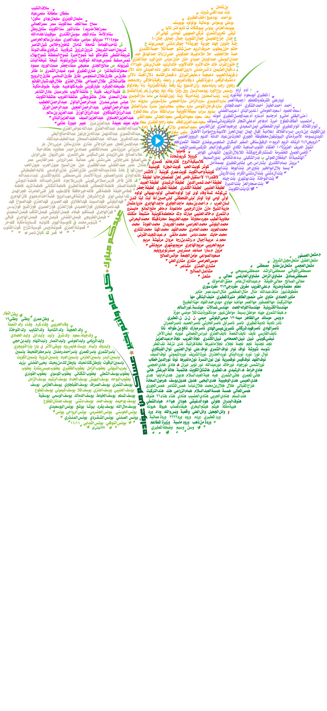

<audio id="rose" src="rose.mp3" preload="auto"></audio>


<script>

  function rose() {
        var audio = document.getElementById("rose");

        if (audio.duration > 0 && !audio.paused) {
            audio.pause();
            audio.currentTime = 0;
        } else {
            audio.play();
        }
 
    }
 
 
</script>


<map name="image-map">
  
  
    <area target="_blank" alt="" title="" href="" onclick="javascript:rose(); return false;"coords="1121,1003,91" shape="circle">
     
  
</map>

